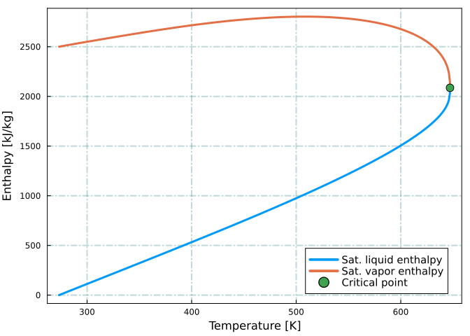

using SteamTables
using PlotsThermal Recovery - Part I
Water/Steam Properties
julia
thermal recovery
steam properties
SteamTables.jl
Disclaimer
This blog post is for educational purposes only. Any commercial use of the information provided in this blog post is prohibited. The author is not responsible for any damage or loss caused by the use of the information provided in this blog post.
Introduction
In this post we will use Julia SteamTables.jl package to estimate water and steam properties. The SteamTables.jl package is a Julia implementation of IAPWS-IF97 formulation.
Loading required packages
Physical properties of water
The triple point of water is defined as the temperature and pressure at which the solid, liquid and vapor phases coexist in thermodynamic equilibrium. The triple point of water is \(\mathrm T_{3p}\) = 273.16 K and \(\mathrm P_{3p}\) = 611.657 Pa. The vapor-liquid critical point of water is defined as the temperature and pressure at which both phases become identical. The critical point of water is \(\mathrm T_{crit}\) = 647.096 K and \(\mathrm P_{crit}\) = 22.064 MPa.
Saturation properties
Saturation pressure
Saturation pressure of water can be estimated using the SteamTables.Psat function. The water phase envelope is generated below from the tripple point \(\mathrm T_{3p}\) = 273.16 K to the critical point \(\mathrm T_{crit}\) = 647.096 K.
T_tripple = 273.16 # K
T_critical = 647.096 # K
T = unique(vcat(T_tripple, ceil(T_tripple):1.0: floor(T_critical), T_critical))
p = [Psat(t) for t in T]
plt = plot(T, p,
xlabel="Temperature [K]",
ylabel="Pressure [MPa]",
label="Sat. pressure",
lw = 3,
legend=:topleft,
legendfontsize = 10,
frame=:box)
xgrid!(:on, :cadetblue, 2, :dashdot, 0.4)
ygrid!(:on, :cadetblue, 2, :dashdot, 0.4)
plot!([T_tripple], [Psat(T_tripple)],
seriestype=:scatter,
label="Triple point",
markersize = 6)
plot!([T_critical], [Psat(T_critical)],
seriestype=:scatter,
label="Critical point",
markersize = 6)
Saturated density
Saturated liquid and vapor densities are estimated using the SteamTables.SatDensL and SteamTables.SatDensV functions.
# saturated liquid density
ρ = [SatDensL(t) for t in T]
plt = plot(T, ρ,
xlabel="Temperature [K]",
ylabel="Density [kg/m³]",
label="Sat. liquid density",
lw = 3,
legend=:topright,
legendfontsize = 10,
frame=:box)
xgrid!(:on, :cadetblue, 2, :dashdot, 0.4)
ygrid!(:on, :cadetblue, 2, :dashdot, 0.4)
# saturated vapor density
ρ = [SatDensV(t) for t in T]
plot!(T, ρ,
label="Sat. vapor density",
lw = 3)
plot!([T_critical], [SatDensL(T_critical)],
seriestype=:scatter,
label="Critical point",
markersize = 6)Saturated enthalpy
Saturated liquid and vapor enthalpies are estimated using the SteamTables.SatHL and SteamTables.SatHV functions.
# saturated liquid enthalpy
h = [SatHL(t) for t in T] / 1e3
plt = plot(T, h,
xlabel="Temperature [K]",
ylabel="Enthalpy [kJ/kg]",
label="Sat. liquid enthalpy",
lw = 3,
legend=:bottomright,
legendfontsize = 10,
frame=:box)
xgrid!(:on, :cadetblue, 2, :dashdot, 0.4)
ygrid!(:on, :cadetblue, 2, :dashdot, 0.4)
# saturated vapor enthalpy
h = [SatHV(t) for t in T] / 1e3
plot!(T, h,
label="Sat. vapor enthalpy",
lw = 3)
plot!([T_critical], [SatHL(T_critical) / 1e3],
seriestype=:scatter,
label="Critical point",
markersize = 6)
Latent heat of vaporization
The latent heat of vaporization curve is generated using the SteamTables.DeltaHvap function.
h_lv = [DeltaHvap(t) for t in T] / 1e3
plt = plot(T, h_lv,
xlabel="Temperature [K]",
ylabel="Latent heat of vaporization [kJ/kg]",
label="Latent heat of vaporization",
lw = 3,
legend=:topright,
legendfontsize = 10,
frame=:box)
xgrid!(:on, :cadetblue, 2, :dashdot, 0.4)
ygrid!(:on, :cadetblue, 2, :dashdot, 0.4)
plot!([T_critical], [h_lv[end]],
seriestype=:scatter,
label="Critical point",
markersize = 6)A list of all the available functions can be found in the SteamTables.jl documentation.
Wet steam properties
The physical properties of a wet steam mixture (saturated vapor and liquid) is defined by the following equations:
\[ \begin{align} p &= p_{sat}(T) \\[10pt] h &= \left(1 - x \right) h_{sat}^{l}(T) + x \left( h_{sat}^{v}(T) \right) \\[10pt] s &= \left(1 - x \right) s_{sat}^{l}(T) + x \left( s_{sat}^{v}(T) \right) \\[10pt] \rho &= \left(1 - x \right) \rho_{sat}^{l}(T) + x \left( \rho_{sat}^{v}(T) \right) \end{align} \]
where steam quality \(x\) is in weight fraction and defined as:
\[ x = \frac{mass_{vapor}}{mass_{total}} \]
The saturated enthalpy curves are generated below for a wet steam at several steam qualities.
x = [0.0, 0.25, 0.50, 0.75, 1.0]
h = [(1 - x[1]) * SatHL(t) + x[1] * SatHV(t) for t in T] / 1e3
plt = plot(h, T,
xlabel = "Enthalpy [kJ/kg]",
ylabel = "Temperature [K]",
label = "x = $(x[1])",
lw = 3,
legend=:topleft,
legendfontsize = 10,
frame=:box,
title = "Enthalpy plot for wet steam")
xgrid!(:on, :cadetblue, 2, :dashdot, 0.4)
ygrid!(:on, :cadetblue, 2, :dashdot, 0.4)
for i in 2:length(x)
h = [(1 - x[i]) * SatHL(t) + x[i] * SatHV(t) for t in T] / 1e3
plot!(h, T,
label = "x = $(x[i])",
lw = 3)
end
plot!([SatHL(T_critical) / 1e3], [T_critical],
seriestype=:scatter,
label="Critical point",
markersize = 6)Subcooled liquid and superheated vapor properties
SteamTables.jl also provides functions for calculating the properties of subcooled liquid and superheated vapor. The following examples shows the application of specific functions in predicting water propertis over a wide range of temperature and pressure.
Specific properties
The specific properties of water are calculated using the SteamTables.SpecificH, SteamTables.SpecificS, SteamTables.SpecificV, and SteamTables.SpecificCP functions. The specific enthalpy curve is generated below from 273.16 K to 747.096 K at a constant pressure of 10 MPa.
T = vcat(274:1.0:800) # K
P = 10 # MPa
h = zeros(length(T))
s = zeros(length(T))
v = zeros(length(T))
Cp = zeros(length(T))
for i in 1:length(T)
h[i] = SpecificH(P, T[i])
s[i] = SpecificS(P, T[i])
v[i] = SpecificV(P, T[i])
Cp[i] = SpecificCP(P, T[i])
endThe figure below shows the change in specific enthalpy over a wide range of temperatures at a constant pressure of 10 MPa.
plt = plot(T, h,
xlabel="Temperature [K]",
ylabel="Enthalpy [kJ/kg]",
label="Specific enthalpy",
lw = 3,
legend=:bottomright,
legendfontsize = 10,
frame=:box)
xgrid!(:on, :cadetblue, 2, :dashdot, 0.4)
ygrid!(:on, :cadetblue, 2, :dashdot, 0.4)A similar plot can be generated for the specific volume curve.
plt = plot(T, v,
xlabel="Temperature [K]",
ylabel="Volume [m3/kg]",
label="Specific volume",
lw = 3,
legend=:bottomright,
legendfontsize = 10,
frame=:box)
xgrid!(:on, :cadetblue, 2, :dashdot, 0.4)
ygrid!(:on, :cadetblue, 2, :dashdot, 0.4)
There are other functions for calculating the specific properties of water. A list of all the available functions can be found in the SteamTables.jl documentation.
Pressure-Volume diagram construction
The pressure-volume diagram of water can be constructed using the SteamTables.SatDensL, SteamTables.SatDensV, and SteamTables.SpecificV functions. Firstly, the saturated liquid and vapor volume curves are generated from the triple point to the critical point. Then, the specific volume of water is calculated at several constant temperatures over a wide pressure range.
T_tripple = 273.16 # K
T_critical = 647.096 # K
T = unique(vcat(T_tripple, ceil(T_tripple):0.1: floor(T_critical), T_critical))
p = [Psat(t) for t in T]
ν_l = 1.0 ./ [SatDensL(t) for t in T]
ν_v = 1.0 ./ [SatDensV(t) for t in T]
x_log_range = [1e-3, 1e-2, 1e-1, 1e0, 1e1, 1e2]
y_log_range = [1e-3, 1e-2, 1e-1, 1e0, 1e1]
plt = plot(ν_l, p,
xlabel = "Specific volume [m3/kg]",
ylabel = "Pressure [MPa]",
label = :none,
xscale=:log10,
xticks=(x_log_range, x_log_range),
yscale=:log10,
yticks=(y_log_range, y_log_range),
lw = 3,
linecolor = :red,
legend=:topright,
legendfontsize = 10,
frame=:box,
title = "Pressure-Volume diagram of water")
xgrid!(:on, :cadetblue, 2, :dashdot, 0.4)
ygrid!(:on, :cadetblue, 2, :dashdot, 0.4)
plot!(ν_v, p,
lw = 3,
linecolor = :red,
label = :none)
plot!([1.0 / SatDensL(T_critical)], [Psat(T_critical)],
seriestype=:scatter,
label="Critical point",
markersize = 6)
# construct subcooled liquid and superheated vapor curves
T_ = vcat(350:100:550)
p_ = 0.001:0.001:40.0
for i in 1:length(T_)
ν_ = [SpecificV(p, T_[i]) for p in p_]
plot!(ν_, p_,
lw = 3,
line =:dash,
label = "T = $(T_[i])")
end
display(plt)